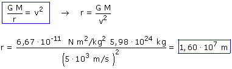

|
En este problema se analiza la puesta en órbita de un satélite siguiendo un trayecto ideal: una subida vertical hasta la altura que interesa para comunicarle a continuación la velocidad adecuada para que describa la órbita a) Utilizando la relación entre velocidad y radio orbital:  Pero no nos piden el radio de la órbita sino la altura de esta respecto a la Tierra, así que: h = r - R = 1.60·107 m - 6.37·106 m = 9.58·106 m |